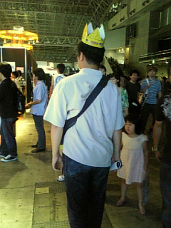
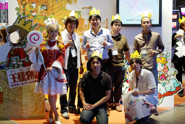

こんにちは、お久しぶりの和田です。
なんだかキムＰがステキな文章書いてるなぁ。
クリエイターズブログっぽくてイイ！
なんて思いつつも、流れをぶったぎって
なんでもない話を書いてしまう僕なのでした。
ごめんなさい。
先ごろ、カンヌに行ってまいりました。
毎年この季節にMIPCOMという映像の見本市があって
わが社もアニメの番組を出展してきたのですが、
今回初めてゲームも出してみよう、ということになり
憧れのカンヌに初めて訪れるチャンスを得た訳です。
ところがどっこい、実際に行ってみると
これが今まで抱いていた華やかなイメージとは違って
言ってしまえば熱海みたいな所でした。
なんというか、枯れてるんですよね。
でもそれは終わっているってことではなくて。
人や建物、そこある全てのものが長い年月を経たからこそ
出てくる味わいを持っていて今なお力強い、
みたいないい感じの寂れ方で、
それはとてもヨーロッパらしいものでした。
そんなわけで、出張の前半はフランスでいい欧州。
後半はイギリスのグループ会社RSGを訪れました。
独立系のデベロッパーのスタジオに招待されて
いろんな技術を見せてもらったり、
仕事の面ではいろんな成果があって充実してたんだけど、
その他で散々な目に会う事に。
夜ロンドンのパブで財布を盗まれました！
置き引きって奴です。
テーブルの上においてしまった自分が悪いんだけど
ほんの数分意識をそらしただけでなくなるなんて。。。
慣れちゃって油断してた。
残念なことだけど、盗られるほうが悪い
が欧州の常識なわけで
ここは日本じゃないんだと痛感しました。
加えて大馬鹿な僕はカードとか免許証とか保険証とか
ぜーんぶ入れちゃってたのでホント大変です。
皆さんもどうかお気をつけください。
他にも色々失敗談があるんだけど、
ここで書くなって感じなのでこの辺で本題、、、っておいっ！
最後に少しだけ関連の話を。
スクエニさんから『小さな王様～』が発表されましたね。
最初にニュースを見たときはカンヌにいたので、詳しい情報もわからず
「何このもろかぶり！」と、ほんとに驚きました。
あとからよくよく見てみると、中身は全然違うものなんですが
Ｗｉｉで国造りで王様、ってことなので表面的には相当似てますよね。
最初は正直「うーん、、、」って感じでした。
でもでも、Ｗｉｉｗａｒｅとか、このゲームのコンセプトは
個人的に大好きだし、賛同したい。
『小さな王様～』には是非大成功してもらって、
和製ＲＰＧといえば『ドラクエ』『ＦＦ』のように
王様ものって言えば『小さな王様～』と『王様物語』だよね
みたいにどちらも盛り上がっていくと嬉しいですね。
とにかく、開発のみんなはそんなこと全くもって気にせずに
自分たちの目指していたものを作り続ければいいと思います。
いやぁ、ほんとに色んなことがあるなぁ
ということで、どうでもいいのにながーい話はおしまい。
がんばっていきまっしょい！
みなさん、おつかれさまです。木村です。
いやー、今日もひと働きしたなぁ。
本日はゲームのイベントシーンのコンテミーティングなどやっておりました。
ちょっと１シーンだけ、文字コンができるタイミングがずれちゃって。
そこだけ進行してきたというわけです。
いやー、それにしてもプロの作業っていいなぁー。
目の前で、どんどんできちゃうんだよなー。実はコンテの秘密兵器みたいな人がおりまして、あらためて凄さをおもいしりましたので、ちょっと一言いいたかった。
本職ってすごいわ。
この凄さは１００年後まで言い伝えとして残るに違いない（笑）。
＊＊
さて、前置きはそれくらいにして、ちょこっと僕が３０代で感じた”小さなこと”を書いてみます。
実は今回の作品の話しをするときに、よく僕は 「童話」 というキーワードをつかいます。
「童話」というと子供用の本のようなきがしますが、実はそうでもない。
童話には、大人が大人にむけたメッセージが隠されています。こっそりと。
そして、そんな大人も読める童話のプロが、“サンテクジュペリ” 。
星の王子様の作者ですね。有名な人です。
プロってほんとに偉いなーとおもった人の一人です。
いつそう思ったかというと、３０歳くらい。ちょうど今から７、８年前。
女の子の友達に 星の王子様をプレゼントされたんですが、あまり喜べませんでした。
「あー、たしか小学生のときにアニメでみたな・・。
そんで中学校の先生に紹介されて・・たしか本もよんだ・・・。
たしかたしか、大学でもよんだな・・あれかぁ～。うーん。ま、たしかに面白かったが・・」
もらってうれしそうな顔はしましたが、ちょっと微妙な気持ちでした。
「だってもう、３回も読んじゃったんだもんな～」みたいな。
・・・ところが、よんでみると、おもしろいおもしろい。
子供のころは、奇想天外なだけの印象でいっぱいだった。
ところが、中学、大学、そして・・・・大人になってから読むと、いろいろな要素がすごくいい。冗談とアイロニー満載。しかも、「生きててつらかったんじゃないのか、この作者は！？」とか心配さえしてしまう。
そんじょそこらの映画なんかよりスーパーおもしろい。
子供のころよんだ印象と
中学校でよんだ時の印象
大学生でよんだ時・・
そして、３０代でよんだ時の印象がまったく違って、毎回、光ってる。
こんな物語を書けるって・・・さすがです。
こういう感じをうける絵本や童話はもちろん星の王子様だけじゃないんですが、
この手の作家さんのことを思うと、胸が熱くなる。
僕たちが作ってるゲームは
いったいいつまで語り継がれるのかな？
そんな価値のあるものになるのかな？
・・とかよぎってしまいます。
時間を越えて、いろいろな世代、時代の人が「いいねぇー」っていえるものって、本当にすごい。
いつかそんな領域に、僕も踏み込んでみたいな。（ ・・とかって思うのは、傲慢でしょうか？）
１００年前の本が、いつのまにか時を飛び越えて人に影響をあたえたり。
縄文時代の土器をみて、なんとなくきれいだなーと感じたり。
小３時代に友達と恐竜図鑑をみて、図書室でおおもりあがりしたり。
この世には、たしかに、そういう時空間を越えて面白さが伝わってしまう”素粒子”があるらしい。そしてその素粒子の一粒一粒が次の世代にうけつがれて、“おもしろエネルギー”に変換されるらしい。
僕もそんな素粒子の一粒になれればなぁと思う今日この頃です。
合掌。
＊
なんか、ブログ書いてる間に机の電球が明滅しはじめた。
あしたは１００円ショップで電球買わないとねぇ。
こんにちは、ディレクターの川口です。
みなさま、東京ゲームショウで公開された映像をご覧頂けましたでしょうか？
開発スタッフ一同、入魂の映像です。
とにもかくにもスタッフのみんな、お疲れ様でした！
ちょっと苦しい時期もあったけど、楽しい映像になりました～
この場を借りて、お礼申し上げます。
残業、徹夜、休日出勤、がんばってくれました。
みんな、本当に有難う。
まだまだマスターアップまで頑張らなきゃですが、もう一踏ん張りしましょう！
と、クリエイターである我々は時に、傍から見ると無茶な業務を乗り越えなくてはいけません。
でも「楽しんで作ってる」と、それは辛さとイコールにならないと思います。
義務で作る訳ではないので、クリエイターたちには「楽しいゲームに仕上げる
責任」がありますが、その責任を果たして、楽しんでくれたユーザーの声が
聞けたときには必ず感動します。
正直、順風満帆に開発が進むことはなかなかありません。
王様物語も大変です。
でも、なんとかなるんじゃない？
楽しんでくれるユーザーの笑顔を妄想しながら、頑張りましょう。
そうそう、
ＴＧＳのカンファレンスでは２００８年春発売予定と発表されました。
ユーザーの皆様にはもう少しお待たせしますが、楽しみにしていて下さい！
そのステージに、志田未来さんが駆け付けてくれましたが、
一言で言うと、可愛い。
二言で言うと、めちゃ可愛い。
ステージ上で、デレデレした和田さんと木村さんが羨ましかったですが、
きっと開発現場にも応援しに来………
てもらえる訳ないよなぁ。
えっと、スタッフ一同心待ちにしておりますので────よろしくお願いします！
（必死ｗ）
あと、ブースの前に「アプリコット姫」が居たのです！！
めちゃめちゃ可愛かったんですよ。
おねえちゃん鑑賞が趣味（プロフ参照）？の私にとっては、それも見どころの
一つでしたｗ
ＴＧＳの興奮冷めやらぬって感じですが、完成までまだまだ頑張ります！
え？
ＴＧＳで流れた王様物語プロモーションムービーをまだ見ていない？？？
ハイ、分かりました！
http://jp.youtube.com/
（「王様物語」で検索してね）
これは大丈夫なのだろうか（汗
こんにちは。ゲームデザイナーの安永です。
行って来ましたよ～、東京ゲームショウ2007に。
今回も本当にスゴイ熱気でした。そして、たくさんの刺激を受けてきました。
毎日机に座って開発していると、つい忘れがちになっちゃうんですが、
自分がゲーム業界という大きな世界の一部分を、確実に担ってるんだと、
改めて実感してきた次第です。
マーベラスの王様物語ブースにも、たくさんの人に集まっていただきました。
見に来てくれた皆さん、本当にありがとうございます。
実は、王様ブースにどれくらい人が集まっているのか気になって、
何回もブースに立ち寄っては、チェックしてたんですよ。
それで結果的に、アプリコット姫の前を、何度も往復することになったんですが、
きっと彼女には、遠巻きに眺める内気なファンと映ったことでしょう。
とはいえ「僕は怪しい者じゃありません。開発者です」と言い訳するのもなぁ……。
とにもかくにも、初公開の実機画面ムービーも好評だったようで何よりです。
そういえば、ブースで配布した王冠も、なかなか人気でした。
かぶって歩いている人をたくさん見かけましたから。
王冠をかぶった人とすれ違うたびに、心の中で「ヨッシャヨッシャ」と
ひそかにガッツポーズをしてました。
（添付写真）

他にも様々なユーザーの方々の姿を拝見しました。
・入場ゲートに並んでいる間、僕の後ろで絶え間なくしゃべり続けた女の子たち
・興奮気味に会場の様子をレポートする海外のメディアクルー
・某ゲームのデモ画面を見ながら強烈に批判する高校生
・帰りの京葉線で、マーベラス配布のパンフレットをじっと読む男性
などなど。
こういう人物観察って、結構好きなんですよね。
こっそり観察しては、きっとこういう性格の人なんじゃないかとか、
普段どういう生活してるんだろうとか、あれこれ想像したりします。
電車の中や、お店とかで、誰でも一度は、そんな人物観察をした経験が
あるんじゃないでしょうか？
実は、この王様物語にも、人の行動を観察する面白さが入ってます。
王国で生活するＮＰＣが、ＡＩによって様々な行動をする仕組みになってるんです。
しかもその行動は、王様であるプレイヤーの影響で、刻々と変化していきます。
じっくり観察していると、いつもと違う行動をとるＮＰＣがいて、
気になって話しかけると、その原因が王様だった、何てことも。
ＮＰＣの何気ない行動を見て、ゲームの世界を思いっきり想像してほしいですね。
ただいま、そんな仕掛けをゲーム内にちりばめている真っ最中。
プレイヤーの皆さんの想像力をかきたてるライフシミュレーションにすべく
鋭意頑張ってますので、応援のほどヨロシクお願いいたします。
おつかれさまです。
おひさしぶりの木村です。
ＴＧＳ 業者日が本日で終わりました
明日はいよいよ一般日、楽しみです。
とりあえず、この二日の出来事最速レポートをどうぞ！！
・初日はステージ
志田未来さんの応援もあり、華やかさ１００％！
なんで、あんなかわいい人が現実に存在するんだろう。
ほんと、同じ人間とは思えないオーラがでてました。
かわいすぎる！
天使です！
・真夜中、アプリコット姫こすぷれ用 小道具をもらいに倉島さんと待ち合わせ
急なお願いだったというのに、ほんといろいろ助けてくれてありがとうございます
・二日目（本日）は王様物語、海外からも注目度が高いようで・・
海外から来てくれる方の対応でてんやわんや。
なかでも印象にのこったのは南千住に住んでいるのアメリカ人のおにいちゃん！
彼とはぜひお友達になりたいですな。ほんとにおもしろいやつだった。ベジタリアン。
取材っていうか・・おもしろい日本の風景についてディスカッションしただけのような（笑）
・福岡開発＋倉島くん、緊急お茶会（？）
一同全員集合・・というわけにはいきませんでしたが
重鎮メンバー勢ぞろい。アイスコーヒーのみつつ談話。
木村「あれ？みんなアルファロム大丈夫？」
一同「大丈夫です！」
とのこと。
たのもしいですな。
・倉島君が書いてきた設定画ラフ絵をみんなで鑑賞。
いやー、これおもしろかった。もちろんうちあわせして書いてるので
わしのアイデアもはいってるけど、倉島の絵だからああなるんだよなー。
見せたい。けど、まだここではみせられない。いつかみせます。
うーん、おもしろいねー。どんどん描いて！

・そうそう、みんなで王様ブースの前で記念撮影もしました。
制作発表おめでとうございまーす！
＊＊＊
さてさて、ＴＧＳまだ終わってないけど
やっとここまでたどりついた。
３月から本格的に開発がリスタートして
ここにたどりつけたのは本当にうれしいです。
今回は映像のみの出展（開発度３５％）ですが
いつか実機で公開したいなー。
うーん、まちどおしいです。
さてさて、明日は一般日がはじまります。
いったいどれくらいのお客さんがブースをのぞきにきてくれるのでしょうか？
あ、そうだ！
ブースにいるアプリコット姫、とてもかわいらしい方がスタンバイしております。
みなさん、お楽しみに！
ぜひ、王様物語映像出展のブースにお立ち寄りください！
ふぅぅぅ（あくび）、もうそろそろ眠ります。
明日もＴＧＳだ！がんばるぞ！


 クリエイターズBLOG トップ
クリエイターズBLOG トップ